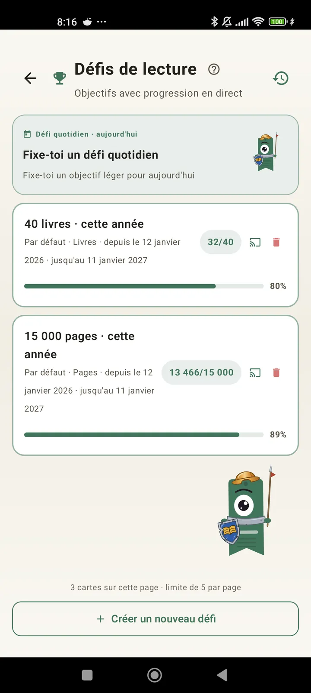

Apprends à te connaître comme lecteur
Défis, bingos, widgets et d'autres fonctionnalités pour profiter à fond de tes lectures. Nouveau dans la 3.7 : widgets de défis et de bingo.

Défis de lecture
Fixe-toi des objectifs de pages, de séries ou de genres. Jusqu'à 15 défis actifs en gratuit, illimités avec Pro. En plus, un défi quotidien personnalisable qui ne compte pas dans la limite.

Défi quotidien
Un nouvel objectif chaque jour. Termine le défi avant minuit pour garder ta série.

Bingo lecture
Deux nouveaux bingos chaque mois avec des cases thématiques. Complète des lignes, des colonnes ou la grille entière.

Résumé hebdomadaire
Chaque lundi, un aperçu de ta semaine : pages lues, temps total, série et comparaison avec la précédente.

Récap mensuel
À la fin de chaque mois, Lecturameter le résume : pages, temps, livres terminés, ton rythme jour par jour et ton livre du mois.

Widget de bingo Pro
La grille de bingo du mois, toujours sous les yeux, avec les cases que tu as remplies et les lignes que tu as faites.

Widget de livre Gratuit
Vois le livre que tu lis directement sur ton écran d'accueil : couverture, titre, auteur, pages et pourcentage de progression, toujours à jour. Redimensionnable pour s'adapter où tu veux.
Sérieux, l'appli c'est comme une thérapie. Je suis passé de quelques pages par jour à genre 20 pages par jour, et ça continue de s'améliorerAvis d'un utilisateur, reçu par e-mail

Comparaison mensuelle Pro
Un coup d'œil rapide sur tes derniers mois sans ouvrir l'appli. Des barres avec les pages de chaque mois et le mois en cours mis en avant, pour voir d'un regard si tu fais mieux ou moins bien que le mois dernier.

Widget de défis Pro
Tes défis actifs et leur progression sur l'écran d'accueil. Choisis lesquels afficher depuis l'écran Défis.